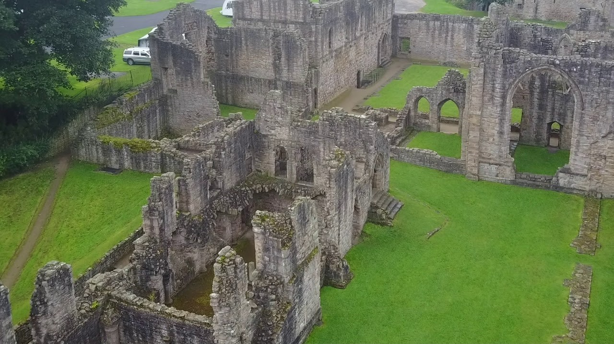
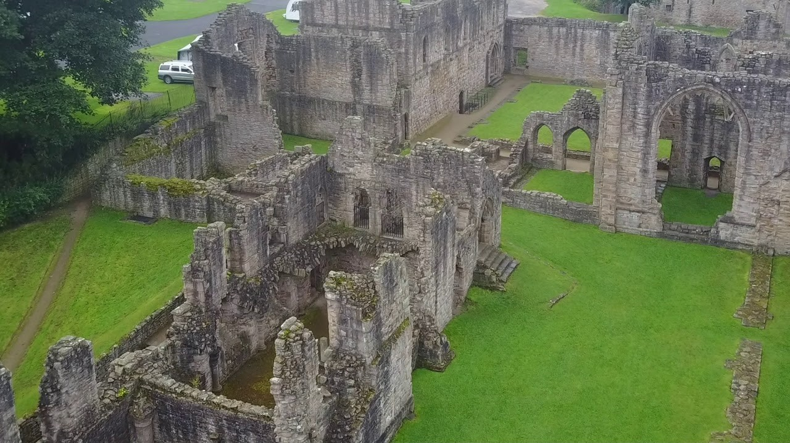

Saddler Street to the right on the picture is a cobbled road which leads up to Durham Cathederal and is presumed to be where saddles were made and sold. These days you will encounter many different shops and bars on the hike up to the cathederal and castle.
Milburngate bridge is at the heart of Durham, leading from the old sector to a slightly more modern part of the city and on to North Road or up to Crossgate. The view is of the bridge which is overlooked by Durham Castle.


Penshaw Monument lies to the north west of Durham but can be seen from Gilesgate on a clear day. Built between 1844 and 1845 to commemorate the first Earl of Durham, John Lambton, and has a local fable and ballad surrounding it, The Lambton Worm.